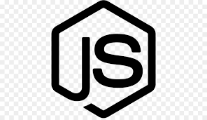

O que é a linguagem JavaScript?? 
Não importa se você está começando sua jornada no mundo da programação agora ou já tem experiência com outras linguagens. Você provavelmente já ouviu falar sobre Javascript. Esta que é uma das principais linguagens de programação oferece uma variedade muito grande de frameworks e aplicações para os mais diversos dispositivos. E, quem domina o Javascript, acaba se tornando um programador muito versátil. Antes de mais nada, vamos deixar claro: Javascript não é Java. Apesar da confusão que as pessoas normalmente fazem sobre essas duas linguagens, Java e Javascript não possuem nenhuma ligação direta uma com a outra a não ser o java no nome. Tendo isso em mente, vamos para a definição de o que é Javascript. O JS ou JavaScript é uma linguagem de programação de alto-nível, criada no meio da década de 90, mais precisamente em 1996 pelo lendário programador Brendan Eich que, além de criar o JavaScript, foi também um dos fundadores da Mozilla Corporation
Como o JavaScript se diferencia das outras linguagens de programação?
A linguagem de programação Javascript permite ao desenvolvedor implementar diversos itens de alto nível de complexidade em páginas web, como animações, mapas, gráficos ou informações que se atualizam em intervalos de tempo padrão, por exemplo. Javascript é a terceira camada do bolo de desenvolvimento web e front-end, junto com HTML, CSS e PHP.
As vantagens do JavaScript
O JavaScript tem uma série de vantagens que fazem com ele seja a melhor escolha entre seus competidores. Especialmente em certos tipos de usos e casos. Abaixo estão apenas alguns dos benefícios de usar a linguagem JS:
- Não precisa de um conpilador
Você não precisa de um compilador porque os navegadores de internet o interpretam com HTML
- MAIS FACIL !!
É mais fácil de aprender do que as outras linguagens de programação
- JavaScript possui cliques personalizados
Ele pode ser designado a certos elementos de páginas de internet ou eventos específicos, como cliques e rolagens de mouse personalizados
- Sites mais interativos
Ele faz com que os sites sejam bem mais interativos e segurem a atenção dos visitantes por mais tempo, característica que define a experiência do usuário (UX)
- Mais Rápido
Ele é mais rápido e mais leve que outras linguagens de programação.